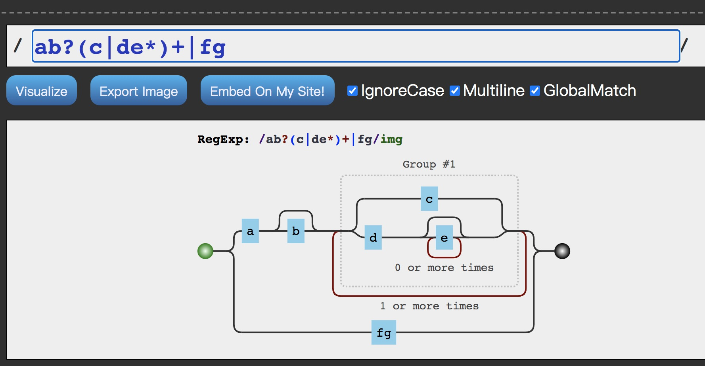

正则快速入门
何为正则，干嘛用的
概念
正则表达式是对字符串操作的一种匹配模式，它由字符和元字符组成，然后对目标字符串进行匹配。
匹配
- 匹配什么？ 匹配目标字符串中对应的字符和位置。
- 匹配了能做什么？
- 校验：也是我们最常用到的，匹配到则存在。
- 提取：当匹配到对应的字符时，可以将其提取出来以作他用。
- 替换：当匹配到对应的字符时，可以将其替换为指定的字符(例如：使用 replace 方法)，以此实现增删改功能。
总结
正则表达式是由字符和元字符组成的表达式，它能对目标字符串里的字符和位置进行匹配，并能对其进行校验，提取和替换。
正则入门咯
推荐个正则的可视化网站 https://jex.im/regulex，后续 demo 以 js 方式编写。
创建正则
- 字面量
1 | const regex = /zhuowenzhou/; |
- 构造函数
1 | const regex = new RegExp("zhuowenzhou"); |
上面两种写法是等价的.它们的主要区别是，第一种方法是在编译时创建正则表达式，第二种方法则是在运行时创建正则表达式。
注意：个人推荐第一种，简单粗暴不用考虑转移，直观好看好阅读。
字符和元字符
- 字符：就是计算机字符编码，例如：我们常见 数字、英文字母 等。
元字符： 这个是我们要说的重点。 - 元字符也被称为特殊字符。是一些用来表示特殊语义的字符。如\d 表示 0 到 9 的数字。
元字符太多不展开，想了解更多点击这里
匹配模式
- 普通匹配 指不包含元字符的匹配
- 模糊匹配 由元字符组成匹配多个字符
- 纵向匹配。正则匹配字符时，如果这个字符，不是唯一的，它可以是 a，也可以是 b，甚至更多其他可能中的一个。例如选择 26 个字符中的一个
- 横向匹配。正则匹配字符时，如果这个字符不是只出现一次，它可能出现多次，甚至最少几次，最多几次。
简单理解就是，纵向匹配是要一个范围的其中一个东西，而横向匹配是具体某个东西，只是这个东西个数是 0 ～ N。
正则表达式方法
正则表达式可以被用于 RegExp 的 exec 和 test 方法以及 String 的 match、replace、search 和 split 方法。
检验类
- test：RegExp 方法，校验成功则返回 true 否则返回 false。也是最常用的校验方法。
1 | var regex = /cat/; |
- search：RegExp 方法，校验成功则返回匹配到的位置索引，失败则返回-1。
1 | var regex = /cat/; |
提取
- exec：RegExp 方法，返回一个数组，其中存放匹配的结果。如果未找到匹配，则返回值为 null。
1 | var regex = /cat/; |
- match：String 方法，返回一个数组，其中存放匹配的结果。如果未找到匹配，则返回值为 null。
1 | var regex = /cat/; |
替换
- replace：String 方法，使用提供的字符串替换掉匹配到的字符串。
1 | var regex = /cat/; |
元字符-字符集合[abc]
举个 🌰：正则表达式/x[mny]z/,可以接受的匹配结果是 xmz,xnz,xyz 三种情况。[mny]称为字符集合，用方括号[]表示。
字符集合可以匹配方括号中的任意一个字符。按照上面的例子,x 和 z 之间的字符只能是方括号里面的 mny 其中一个。
表示范围[a-z]
如果一个字符集合里面有多个字符并且有一定的顺序情况下，可以使用破折号(-)来指定一个字符范围。
例如： 用/[a-z]/，可以从 a 到 z 的所有小写字母。[1234abcdxyz],可以写成[1-4a-dX-Z]
反向字符集 [^abc]
当你在字符集合的第一个加上^脱字符,则表示反向的意思，就是说匹配任何不包含在放方括号的字符。
举个 🌰：[^xyz]则匹配任何不是 x 或 y 或 z 的字符。[^xyz] 和 [^x-z]等价
元字符-特殊字符
一般情况下匹配单个字符直接写就行，但有些特殊字符如空格，制表，回车，换行等需要转义才能使用。
| 特殊字符 | 正则表达式 | 记忆方式 |
|---|---|---|
| 换行符 | \n | new line |
| 换页符 | \f | form feed |
| 回车符 | \r | return |
| 空白符 | \s | space |
| 制表符 | \t | tab |
| 垂直制表符 | \v | vertical tab |
| 回退符 | [\b] | backspace,之所以使用[]符号是避免和\b 重复 |
元字符-同时匹配多个字符
| 特殊字符 | 正则表达式 | 记忆方式 |
|---|---|---|
| 除了换行符之外的任何字符 | . | 句号,除了句子结束符 |
| 单个数字, [0-9] | \d | digit |
| 除了[0-9] | \D | not digit |
| 包括下划线在内的单个字符，[A-Za-z0-9_] | \w | word |
| 非单字字符 | \W | not word |
| 匹配空白字符,包括空格、制表符、换页符和换行符 | \s | space |
| 匹配非空白字符 | \S | not space |
元字符-量词
在匹配时，匹配到的字符经常会出现重复的情况，这时就需要通过量词对次数进行限制。
{m,n} 形式
{m,n}是最常见最基础的量词形式，m 和 n 都是整数。匹配前面的字符至少 m 次，最多 n 次。
栗子：/o{1, 3}/表示 a 出现的次数最少一次，最多 3 次。 所以它并不匹配 ggle中的任意字符。但可以匹配 google 中的 o，匹配 google 中的前两个 o，也匹配 goooooogle 中的前三个 o。注意: 当匹配 goooooogle 时，匹配的值是“ooo”，即使原始的字符串中有更多的 o。
简写形式
| 匹配规则 | 元字符 | 记忆方式 |
|---|---|---|
| 具体只能多少次 | {n} | {n}内只有一个数字。定死了，是几就只能是几次 |
| 至少 min 次 | {min,} | 左边 min 表示至少 min 次，右边没有则可以无限次 |
| 至多 max 次 | {0, max} | 左边数字为 0 表示至少 0 次，右边 max 表示至多 max 次 |
| 0 次或 1 次 | ? | 有没？ |
| 0 次或无数次 | * | 天上星星 |
| 1 次或无数次 | + | 加 1，就是至少一个咯 |
| 特定次数 | {min, max} | 闭合区间，包括边界,{1,3}就是 1 到 3 次 |
贪婪匹配与惰性匹配
贪婪匹配默认情况下，量词(包括简写形式)是贪婪的，即它们会尽可能的多去匹配符合条件的字符。/o{1,3}/，当它匹配“goooooogle”时，o 出现 1 次，2 次，3 次都是符合的，但它还是会贪婪地尽可能匹配最多的次数。所以它不会匹配到 1 个 o 时就结束，而是匹配得到 3 个 o。
惰性匹配(也称非贪婪)有时候我们不希望量词那么贪婪，只希望它匹配到刚好符合的次数就行，不要那么多。那怎么办呢，此时只需在后面加上一个问号?就行。举个栗子：/o{2,3}?/，当它匹配“goooooogle”时,由于此时是惰性匹配，所以它只会匹配得到 2 个 o，而不会贪婪地要 3 个。
元字符-多选分支 x|y
多选分支用于匹配不同的情况。例如：要匹配 dog 和 cat 可以使用 /dog|cat/ , 通过管道符 | 将不同的候选字符隔开。
多选具有惰性
例如：当我们用 /google|google.com/ 去匹配“google”时，得到的结果是 “google”。改成 /google.com|google/ 则会得到 “google.com”
元字符-位置匹配
正则表达式是匹配模式，要么匹配字符，要么匹配位置。
既然要匹配位置，那字符串里的位置是指什么，很简单，指的就是字符与字符之间的位置，或者是字符之间的空字符“”。例如：字符串”bai”就有 4 个位置，分别为：”1b2a3i4”。注意还包括字符开头和结尾的位置。
单词边界\b 和非单词边界\B
- \b 单词边界
匹配一个词的边界。一个词的边界就是一个词不被另外一个“字”字符跟随的位置或者前面跟其他“字”字符的位置，例如在字母和空格之间。注意，匹配中不包括匹配的字边界。换句话说，一个匹配的词的边界的内容的长度是 0。（不要和[\b]混淆了）\b，其中 b 是 boundary 边界的首字母
例子 1:
1 | var result = "[JS] demo_01.zip".replace(/\b/g, "#"); |
例子 2: 匹配单词 cat， 而不是包含 cat 的单词，使用\b 确保它的前后两边是否都为单词与非单词之间的位置。
1 | var result = "this is a cat, not a bigcat".replace(/\bcat\b/g, "dog"); |
1 | var str = "moon"; |
- \B 非单词边界
很简单，就是单词边界的反面。具体来说就是单词内部之间的位置，非单词内部之间的位置，非单词与开头和结尾的位置，即 \w 与 \w、 \W 与 \W、^(开头) 与 \W，\W 与 $(结尾) 之间的位置。
1 | var result = "[JS] demo_01.zip".replace(/\B/g, "#"); |
字符串边界^ $
^匹配输入的开始。如果多行标志被设置为 true，那么也匹配换行符后紧跟的位置。例如，/^A/ 并不会匹配 “an A” 中的 ‘A’，但是会匹配 “An E” 中的 ‘A’。当 ‘^’ 作为第一个字符出现在一个字符集合模式时，它将会有不同的含义
$匹配输入的结束。如果多行标志被设置为 true，那么也匹配换行符前的位置。例如，/t$/ 并不会匹配 “eater” 中的 ‘t’，但是会匹配 “eat” 中的 ‘t’。
1 | var result = "[JS] demo_01.zip".replace(/^|$/g, "#"); |
1 | var result = "[JS\ndemo_01.zip".replace(/^|$/gm, "#"); |
特定字符的前后位置
如果匹配的位置是在某个特定位置呢，某个特定字符的前后位置。这时就可以用到下面的元字符：
- 先行断言 x(?=y)
x(?=y) 匹配’x’仅仅当’x’后面跟着’y’.这种叫做先行断言。例如，/Jack(?=Sprat)/会匹配到’Jack’仅当它后面跟着’Sprat’。/Jack(?=Sprat|Frost)/匹配‘Jack’仅当它后面跟着’Sprat’或者是‘Frost’。但是‘Sprat’和‘Frost’都不是匹配结果的一部分。
1 | var result = "Jack Come In".replace(/Jack(?=Sprat)/g, "#"); |
- 后行断言 (?<=y)x
匹配’x’仅当’x’前面是’y’.这种叫做后行断言。例如，/(?<=Jack)Sprat/会匹配到’ Sprat ‘仅仅当它前面是’ Jack ‘。/(?<=Jack|Tom)Sprat/匹配‘ Sprat ’仅仅当它前面是’Jack’或者是‘Tom’。但是‘Jack’和‘Tom’都不是匹配结果的一部分
1 | var result = "Jack Come In".replace(/(?<=Jack)Sprat/g, "#"); |
- 正向否定查找 x(?!y)
仅仅当’x’后面不跟着’y’时匹配’x’，这被称为正向否定查找。
例如，仅仅当这个数字后面没有跟小数点的时候，/\d+(?!.)/ 匹配一个数字。正则表达式/\d+(?!.)/.exec(“3.141”)匹配‘141’而不是‘3.141’
1 | var r1 = "redcat or reddog".replace(/red(?!cat)/g, "#"); |
- 反向否定查找 (?<!y)x
仅仅当’x’前面不是’y’时匹配’x’，这被称为反向否定查找。
例如, 仅仅当这个数字前面没有负号的时候，/(?<!-)\d+/ 匹配一个数字。
/(?<!-)\d+/.exec(‘3’) 匹配到 “3”.
/(?<!-)\d+/.exec(‘-3’) 因为这个数字前有负号，所以没有匹配到。
1 | console.log(/(?<!-)\d+/.exec("3")); // => ["3", index: 0, input: "3", groups: undefined] |
位置匹配整理
| 边界和标志 | 正则表达式 | 记忆 |
|---|---|---|
| 单词边界 | \b | boundary |
| 非单词边界 | \B | not boundary |
| 字符串开头 | ^ | 小头尖尖那么大个 |
| 字符串结尾 | $ | 美元符$ |
| 先行断言 | x(?=y) | ?=y 则找前面的 x |
| 后行断言 | (?<=y)x | 没套路 |
| 正向否定查找 | x(?!y) | !表示否定，如果不是 y 则匹配前面的 x |
| 反向否定查找 | (?<!y)x | 没套路 |
正则表达式标志
| 标志 | 描述 |
|---|---|
| g | 全局搜索 |
| i | 不区分大小写搜索 |
| m | 多行搜索 |
| s | 允许 . 匹配换行符 |
| u | 使用 unicode 码的模式进行匹配 |
| y | 执行“粘性(sticky)”搜索,匹配从目标字符串的当前位置开始 |
分组–正则中括号的作用 ( )
捕获组: 匹配 x 并记住匹配项。例如，/(foo)/匹配并记住“foo bar”中的“foo”
- 作为一个整体的部分匹配
1 | /(cat)/g.test("cat cat cat dog"); // => true |
- 分支结构
1 | var regex = /^I love (JavaScript|Regular Expression)$/; |
分组引用
括号形成的分组还具有一个重要的功能 就是分组引用。就是你可以将括号里正则，匹配到的字符进行提取，以及替换的操作。例如：我们要用正则来匹配一个日期格式，yyyy-mm-dd，我们可以写成分组形式的/(\d{4})-(\d{2})-(\d{2})/ 。这里三个括号包裹的就分别对应分组 1，分组 2，分组 3。
提取数据
String 的 match 方法和正则的 exec 方法。
- match：
1 | var regex = /(\d{4})-(\d{2})-(\d{2})/; |
match 返回一个数组，第一个元素是整体匹配结果，然后是各个分组（括号里）匹配的内容，然后是匹配下标，最后是输入的文本。
- exec：
1 | console.log(/(\d{4})-(\d{2})-(\d{2})/.exec("2020-02-20")); |
- 全局属性 $1 - $9 获取捕获数组的值
1 | var regex = /(\d{4})-(\d{2})-(\d{2})/; |
替换数据
使用 String.prototype.replace 替换，例如日期转换：yyyy-mm-dd 替换成 dd/mm/yyyy
1 | var regex = /(\d{4})-(\d{2})-(\d{2})/; |
反向引用
前面说到引用分组，它引用的分组是来自于匹配完后得到的结果。而反向引用也可以引用分组，只是它的分组来自于匹配阶段捕获到的分组。
举个 🌰：
2020-02-02
2020.02.02
2020/02/02
要匹配上面三种格式，通常写法是
1 | var regex = /\d{4}[./-]\d{2}[./-]\d{2}/; |
从上面的结果看到，str1，str2，str3，是我们的期望结果，而 str4 却不是。我们期望的是连接符是保持一致的。即第一个是“-”的话第二个也必须是“-”，这时候就需要用到反向引用了。我们希望第二个连接符和第一个匹配到的保持一致。需要把第一个[-/.]加上括号([-/.])，样才能方便引用。第二个连接符需要和第一个保持一致，这就需要引用它。这个时候就用\1，来表示第一个引用，同理\2 和\3 等表示第二和第三个引用。那么之前的正则就改为了/\d{4}([-/.])\d{2}\1\d{2}/。
1 | var regex = /\d{4}([./-])\d{2}\1\d{2}/; |
分组嵌套
正则的匹配顺序是从左到右，同样分组也是这样的从左到右。我们只需按左括号的顺序，依次判断分组即可。
1 | var r1 = /^((\d{4})([-/.])\d{2})\3\d{2}$/; |
从左往右分析
第一组：((\d{4})([-/.])\d{2})
第二组：(\d{4})
第三组：([-/.])
\10 表示什么
\10 表示第三个分组
1 | var reg = /^(1)(2)(3)(4)(5)(6)(7)(8)(9)(10)\10+$/; |
引用不存在的分组
在正则里引用了不存在的分组时，此时正则不会报错，只是匹配反向引用的字符本身。例如\2，就匹配”\2”。
注意：”\2”表示对”2”进行了转意。很可能转义的 2 就不是数字 2 了，就变成其他字符了！所以我们再使用时一定要注意不要引用不存在的分组！
非捕获分组(换言之就是分组的还是分组，只是不捕获到内存)
前面说到的分组都可以被引用，如果我不想被引用，则可以使用非捕获分组(?:p)。因为引用是会在内存里开辟一个位置，所以非捕获分组还可以避免浪费内存。
1 | var str = "shotcat"; |
正则匹配步骤与回溯
正则匹配步骤
我们知道正则匹配的方向是从左到右的，那具体到每个字符的匹配步骤是怎样的。我们以一个例子来具体说明：
正则表达式/ab{1,3}bbc/ ,目标字符串为“abbbc”
- 匹配 a
- b{1,3} 根据贪婪模式匹配 bbb
- 然后 b 匹配到了字符串 c，发现不对，进行回退
- b{1,3} 这次匹配 bb
- b 匹配到 b
- b 匹配到 c，发现又不对，继续回退
- b{1,3}匹配 b
- 后面的 bbc 匹配到字符串的 bbc 结束
回朔
回溯法也称试探法，它的基本思想是：从问题的某一种状态（初始状态）出发，搜索从这种状态出发所能达到的所有“状态”，当一条路走到“尽头”的时候（不能再前进），再后退一步或若干步，从另一种可能“状态”出发，继续搜索，直到所有的“路径”（状态）都试探过。这种不断“前进”、不断“回溯”寻找解的方法，就称作“回溯法”。
本质上就是深度优先搜索算法。其中退到之前的某一步这一过程，我们称为“回溯”。从上面的描述过程中，可以看出，路走不通时，就会发生“回溯”。即，尝试匹配失败时，接下来的一步通常就是回溯。
常见的回溯形式
- 贪婪量词
之前的例子都是贪婪量词相关的。比如 b{1,3}，因为其是贪婪的，尝试可能的顺序是从多往少的方向去尝试。首先会尝试”bbb”，然后再看整个正则是否能匹配。不能匹配时，吐出一个”b”，即在”bb”的基础上，再继续尝试。如果还不行，再吐出一个，再试。如果还不行呢？只能说明匹配失败了。
多个贪婪怎么办-先下手为强
1 | var string = "12345"; |
- 惰性量词
1 | var string = "12345"; |
- 分支结构
我们知道分支也是惰性的，比如/can|candy/，去匹配字符串”candy”，得到的结果是”can”，因为分支会一个一个尝试，如果前面的满足了，后面就不会再试验了。
分支结构，可能前面的子模式会形成了局部匹配，如果接下来表达式整体不匹配时，仍会继续尝试剩下的分支。这种尝试也可以看成一种回溯。
总结
贪婪量词“试”的策略是：买衣服砍价。价钱太高了，便宜点，不行，再便宜点。
惰性量词“试”的策略是：卖东西加价。给少了，再多给点行不，还有点少啊，再给点。
分支结构“试”的策略是：货比三家。这家不行，换一家吧，还不行，再换。
避免回朔
对正则的情况进行合理搭配限制，当次数过多时，可以通过惰性量词进行合理限定，当正则匹配的数据存在关联时，则可以通过引用限定为具体的数据。这些都能有效减少回溯。
正则表达式的阅读
结构和操作符优先级
那结构是什么？就是字符与元字符组成的一个整体。正则会将这个作为一个整体去匹配。例如[abc]，它就是由元字符[]和普通字符abc一起组成的一个结构。正则遇到后就会作为一个整体去匹配，匹配的字符可能是 abc 中的任意一个。JavaScript 正则表达式包含如下几种结构：字符字面量、字符组、量词、锚、分组、选择分支、反向引用。
| 边界和标志 | 正则表达式 | 记忆 |
|---|---|---|
| 单词边界 | \b | boundary |
| 非单词边界 | \B | not boundary |
| 字符串开头 | ^ | 小头尖尖那么大个 |
| 字符串结尾 | $ | 美元符$ |
| 先行断言 | x(?=y) | ?=y 则找前面的 x |
| 后行断言 | (?<=y)x | 没套路 |
| 正向否定查找 | x(?!y) | !表示否定，如果不是 y 则匹配前面的 x |
| 反向否定查找 | (?<!y)x | 没套路 |
正则表达式结构
| 结构 | 说明 |
|---|---|
| 字面量 | 匹配一个具体字符，包括不用转义的和需要转义的。比如 a 匹配字符”a”，又比如\r 匹配回车 |
| 字符组 | 匹配一个字符，可以是多种可能之一，比如[0-9]，表示匹配一个数字。 |
| 量词 | 表示一个字符连续出现，比如 a{1,3}表示“a”字符连续出现 3 次。 |
| 锚点 | 匹配一个位置，而不是字符。比如^匹配字符串的开头，又比如\b 匹配单词边界 |
| 分组 | 用括号表示一个整体，比如(ab)+，表示”ab”两个字符连续出现多次 |
| 分支 | 多个子表达式多选一，比如 abc |
| 反向引用 | 比如\2，表示引用第 2 个分组。 |
操作符优先级
| 操作符描述 | 操作符 | 优先级 |
|---|---|---|
| 括号和方括号 | (…)、(?:…)、(?=…)、(?!…)、[…] | 1 |
| 量词限定符 | {m}、{m,n}、{m,}、?、*、+ | 2 |
| 量词限定符 | {m}、{m,n}、{m,}、?、*、+ | 3 |
| 位置和序列 | ^ 、$、 \元字符、 一般字符 | 4 |
| 管道符（竖杠） | | | 5 |
